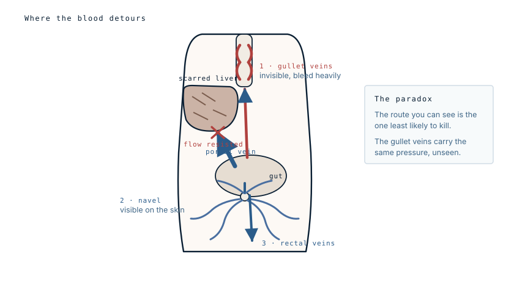

A vein that closed at birth, reopened fifty years later
The veins fanning out across his abdomen were not new vessels. One of them was the vein that carried his own blood before he was born, sealed shut in his first days of life and forced back open by pressure decades later.
- Specialty
- Hepatology, gastroenterology
- Patient
- Man, 53
- History
- Around 60 g of alcohol daily for 20 years
- Presentation
- Leg swelling, abdominal distension, a soft collapsible lump, 3 months
- Sign
- Caput medusae — veins radiating from the navel
- Underlying problem
- Portal hypertension from cirrhosis
- before birththe vein that closed
- 20 yearspressure builds
- 3 monthsswelling, distension
- the riskwhere it really is
What the veins are
Before birth, oxygenated blood reaches a fetus along the umbilical vein, which runs from the cord into the liver. When the cord is cut, that vein has no job left. It shrinks down over the following days and weeks into a fibrous cord, the round ligament, which sits in the falciform ligament of the liver and does nothing for the rest of a normal life.
It does not entirely disappear. Small paraumbilical channels persist alongside it, and the old vein retains a potential lumen. Given enough pressure from the portal side, that channel reopens.
Blood then runs the wrong way out of the liver, forward along the round ligament to the navel, and spreads outward into the veins of the abdominal wall. Those veins are not built for that volume, so they distend and become tortuous, and the result is a set of thick vessels radiating from the umbilicus — the appearance named after the snake-haired Medusa.
Why the pressure is there
All the blood draining the intestines, stomach, spleen and pancreas is collected into the portal vein and delivered to the liver, where it is filtered before rejoining the general circulation. That is an unusual arrangement — most venous blood goes straight back to the heart — and it means the entire drainage of the gut has to pass through one organ.
Cirrhosis replaces liver tissue with scar. Scar does not carry blood. Resistance rises across the liver, and pressure builds behind it, throughout the whole portal system. That is portal hypertension, and the collateral veins are the circulation's response to it: blood finds any pre-existing connection between the portal and the systemic side and forces it open.

The part that matters
The abdominal veins are the famous sign, but they are not the problem. They sit under skin, they are visible, and they are usually tolerated for years.
The same pressure is doing the same thing at the lower end of the oesophagus, where the portal and systemic systems also meet. There, the collaterals are thin-walled veins bulging into the gullet, with nothing supporting them and food passing over them several times a day. Those are oesophageal varices, and when they rupture the bleeding is torrential and can kill within hours.
So the visible sign is the reassuring one, and its real value is as a marker: a patient with caput medusae has portal hypertension, and a patient with portal hypertension needs an endoscopy to find out what is happening in the oesophagus, where nobody can see.
This is worth stating clearly because it inverts the intuition. The dramatic finding on the abdomen is not the emergency. It is the announcement that an emergency is being prepared somewhere else.
Two bedside details
Distended abdominal wall veins have another possible cause: obstruction of the inferior vena cava, the main systemic vein returning blood from the lower body. The two are distinguished by the direction the blood is travelling. In portal hypertension it flows outward, away from the navel in all directions. In caval obstruction the blood is being routed upward past the blockage, so the flow runs consistently toward the head. A clinician can test this at the bedside by emptying a segment of vein with two fingers and watching which way it refills.
The second detail is audible. A stethoscope over the umbilicus in some of these patients picks up a continuous venous hum from the recanalized vein, occasionally with a thrill that can be felt. Reported in the nineteenth century by Cruveilhier and later by Baumgarten, it remains one of the few findings in medicine that is genuinely diagnostic on its own.
The other findings in this case
Swollen legs and a distended abdomen belong to the same process. Portal hypertension, together with a failing liver's inability to make enough albumin, drives fluid out of the circulation and into the abdominal cavity as ascites, and into the tissues of the legs.
The soft collapsible lump is most likely an umbilical hernia, which is common when ascites pushes constantly against a weak point in the abdominal wall. It is worth noting that a caput medusae has itself been mistaken for a hernia, and that these vessels, although usually harmless, can very rarely rupture. Fatal bleeding from abdominal wall varices is documented, if uncommon.
On the alcohol figure
Sixty grams a day is a specific quantity, and it is worth translating: it is roughly six standard drinks, sustained daily for twenty years.
Cirrhosis risk rises with both the amount and the duration, but the relationship is not fixed. Many people drink at this level for decades without developing cirrhosis, and some develop it at lower intakes. Sex, nutrition, viral hepatitis, obesity and genetics all shift the threshold. The figure in a case report describes this patient, not a general safe limit.
What this case teaches
Caput medusae is a physiological workaround made visible: an obstructed circulation reopening a channel that closed at birth. It is famous because it is striking, but its clinical value is entirely as an indicator. The finding on the abdomen tells you the pressure exists; the finding that determines whether the patient survives the year is inside the oesophagus, and the only way to see it is to look.
Written from published literature on portal hypertension and portosystemic collateral circulation, including case reports of caput medusae and reviews of paraumbilical vein recanalization and Cruveilhier-Baumgarten syndrome. Photographs of this sign circulate widely online and are not reproduced here. The diagram is original to MedicaseHub, is simplified, and may be reused freely. This article is not medical advice. Anyone concerned about liver disease or alcohol should speak to a doctor, and vomiting blood is a medical emergency. Read the full disclaimer.